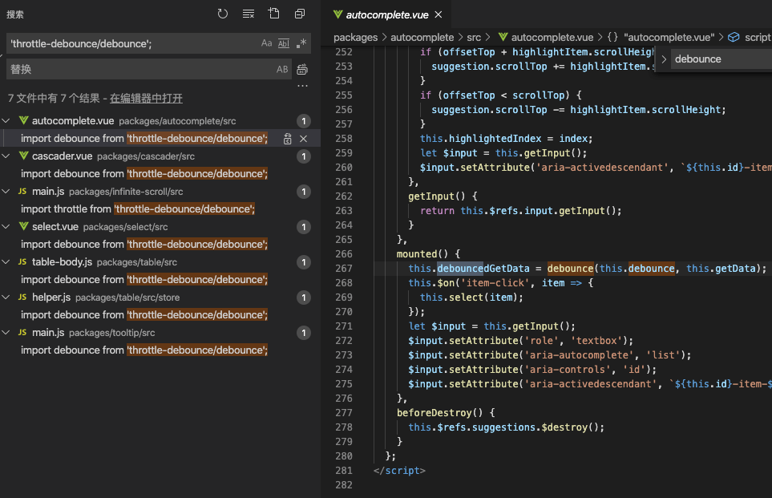

节流与防抖理解以及element源码中节流与防抖的应用
这篇文章发布于 2020/10/08，归类于 Vue
标签：
节流与防抖，element中节流防抖的应用
理论上 throttle 节流一般用于监听类似 resize 方法，想要减少执行频率的场景。对于点击按钮提交，防止短时间内多次点击可以用 debounce 防抖
但实际使用时可根据具体情况来看，本质上都是利用 setTimeout 来处理执行频率或执行间隔。下面是一个简单的 lodash 防抖示例，300ms 内放置重复点击
import { debounce } from 'lodash'
export default {
methods: {
submitFormDebounce: debounce(function() {
console.log('submit', +new Date())
this.submitForm()
}, 300, {trailing: true}),
submitForm() {
}
}
}element源码中节流与防抖的应用
在做input搜索时，由于input change后需要请求接口，这里el-autocomplete有个默认的300豪秒debounce，可以减少请求频率。理论上这里减少频率需要使用节流，但为什么是防抖呢？
我们把 element 源码中对节流防抖的使用都找一找。可以看到element使用的节流防抖库是 throttle-debounce
发现节流 throttle 用的比较少，只找到了三个地方：
// Backtop 回到顶部
// packages/backtop/src/main.vue 滚动监听时用到了节流
import throttle from 'throttle-debounce/throttle';
mounted() {
this.init();
this.throttledScrollHandler = throttle(300, this.onScroll);
this.container.addEventListener('scroll', this.throttledScrollHandler);
},
// Carousel 走马灯
// packages/carouse/src/main.vue 鼠标hover，箭头点击使用了节流
import throttle from 'throttle-debounce/throttle';
created() {
this.throttledArrowClick = throttle(300, true, index => {
this.setActiveItem(index);
});
this.throttledIndicatorHover = throttle(300, index => {
this.handleIndicatorHover(index);
});
},
// Image 图片 滚动到区域懒加载时，使用了节流
if (_scrollContainer) {
this._scrollContainer = _scrollContainer;
this._lazyLoadHandler = throttle(200, this.handleLazyLoad);
on(_scrollContainer, 'scroll', this._lazyLoadHandler);
this.handleLazyLoad();
}再来看看防抖的地方

总结：涉及到接口请求次数限制的基本都是防抖，对于滚动类别防止多次执行的情况才用节流，其他请求一律防抖